A pet that lives on top of your screen.
Max walks along the bottom of your desktop while you work. He naps, looks at your cursor, plays fetch, brings you things he found, and asks you to take a break. Everything under him stays clickable.
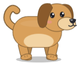
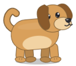
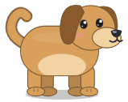
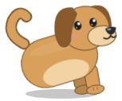
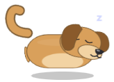
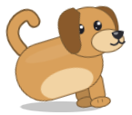
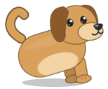
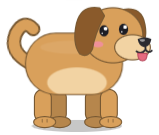
The real app does more than this page can: Max accelerates and brakes with momentum, leans into turns, swings when you carry him, and turns his head to follow your cursor at 8 to 30 ticks per second. The frames here are the app's own renders, captured on Windows.
He decides for himself. You just happen to be there.
Nothing in PetOnScreen "plays an animation" on a timer. A behavior engine picks what Max does next from 28 states, weighted by his personality, his stats, the time of day, and what you have been doing.
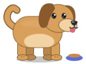
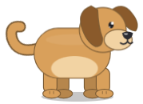
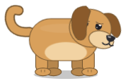
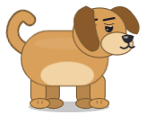
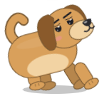
Also: look around, stretch, groom, jump, drink, bathe, hide, dance, zoomies, celebrate, watch you, and a few more. Cats groom and nap more, penguins bathe, foxes hide things.
He notices you
Move your mouse near him and his ears perk up first, after a delay that depends on how curious he is. Then his eyes follow, then his head turns. Keep working and he loses interest.
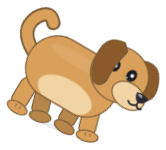
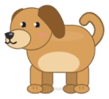
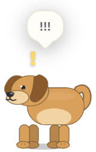
Pick him up
Drag him anywhere. He swings from your hand, pivots when you move fast, drops with gravity when you let go, lands with a squash, and is briefly offended if it was a long fall.
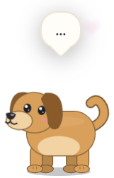
~5% chance after each activityRare moments
Fourteen spontaneous events: zoomies, a dance, hiding behind nothing, a sudden gift, or a treasure he found that goes into your inventory. They are rare on purpose, so you notice them.
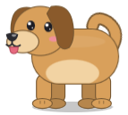
8 traits, drift with treatmentA personality that shifts
Playfulness, laziness, curiosity, friendliness, energy, intelligence, affection and mischief bias every decision. Play a lot and he gets more playful. Ignore him and he gets more independent.
Knows when you have been at it too long
After 90 minutes of continuous use he asks you to take a break. He also notices when you walk away and greets you when you come back. The only signal is the OS idle timer.
Talks back
Open the talk bubble and ask how he is. Replies are local, instant and aware of his stats, with no key or account. Add a Claude API key in Settings and he answers in character and remembers your name.
Two games you play with your actual mouse.
Both run on the same overlay. Press Esc or Done to stop and give the screen back.
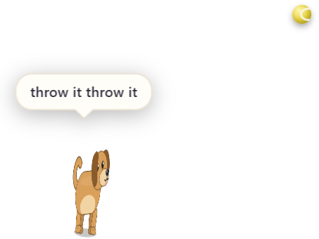
Fetch
Pick up the ball and flick it anywhere on screen. Max reacts with a delay that depends on his personality, chases, leaps for balls thrown high, catches, and carries it back to your cursor. Lazy pets sometimes refuse. Mischievous ones run off with it.
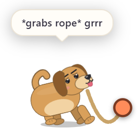
Tug of war
Hold the rope end and pull. He tugs back in bursts and skids when you yank. Both grips drain until someone wins the round. A small HUD shows score and grip meters.
Max is the default. He is not the only one.
Twenty-three animals, including eight dog breeds, and one tiny person. Each has its own silhouette, gait, voice, favorite foods and behavior biases. Adopt as many as you like. One is on screen at a time, the others keep their stats and memories.
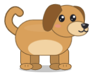
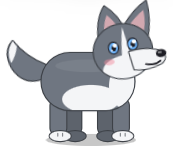
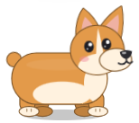
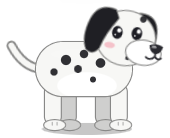
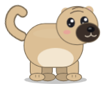
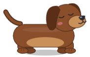
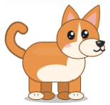
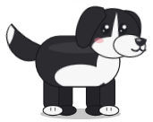
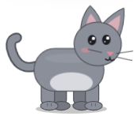
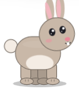
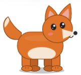
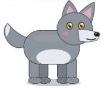
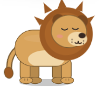
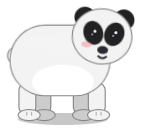
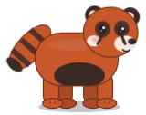
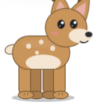
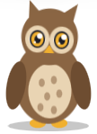
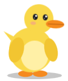
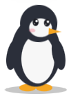
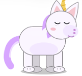
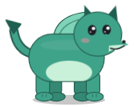
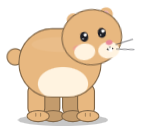
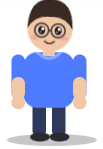
He remembers you between sessions.
Relationship level, favorite activity and food, who you are, how many times you petted him, every rare event. Stats drift gently while the app is closed and he catches up when you return. XP and levels come from time together.
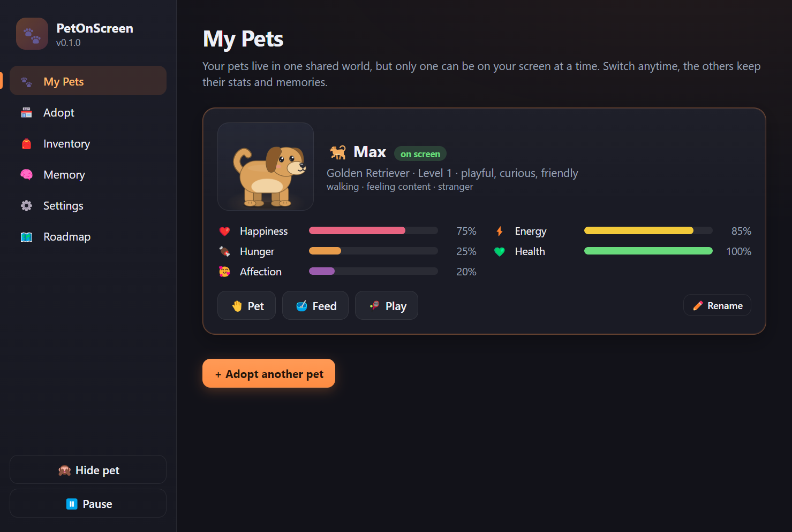
Dashboard. Stats, Pet, Feed, Play, rename, switch pets. Opened from the tray or menu bar paw, or by right-clicking him.
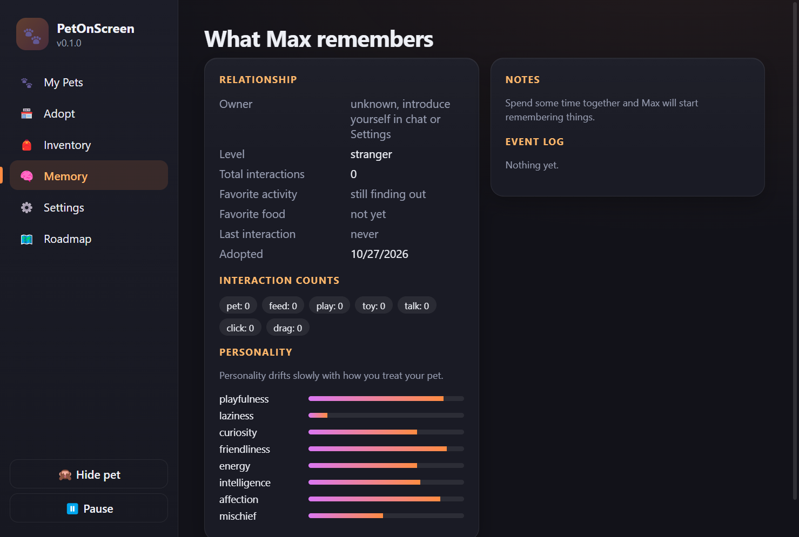
What Max remembers. Relationship, counts, favorites, event log, and the personality bars that move as you treat him.
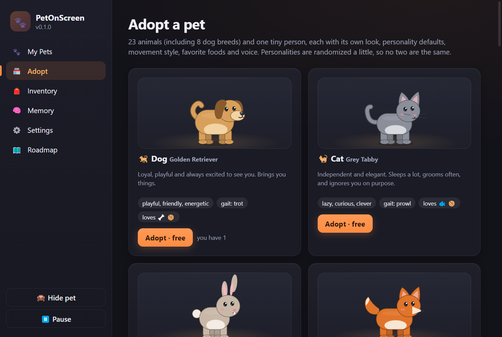
Adopt. Every character is free in this release. Personalities are randomized a little, so no two pets are the same.
Always on top. Never in the way. Barely on the CPU.
How the overlay works
One transparent, frameless window covers your work area and stays above everything else. It starts in click-through mode, so every click lands on whatever is underneath. The main process polls the cursor position at 20 Hz; only while the cursor is over Max, or a menu is open, or you are dragging him, does the window take the mouse.
- Windows: paw icon in the system tray with size, monitor, pause, click-through and always-on-top controls. Optional start with Windows.
- macOS: a menu bar agent with no Dock icon and no Cmd-Tab entry. The pet floats above normal windows but below the menu bar, Spotlight and notifications, shows on every Space and over full-screen apps.
- Multi-monitor: pick which display he lives on. Walking between monitors is not built yet.
Privacy
The only activity signal is the operating system's "seconds since last input" counter. No screenshots, keystrokes, window titles or contents are read. Everything lives in one local JSON file. The optional Claude API key is stored in that same file and is only used from the app when you chat.
Measured CPU, all pet processes combined
| Situation | Share of one core |
|---|---|
| Max idle: breathing, tail, blinking | ~7% |
| Walking or playing | 10 to 20% |
| Static overlay, no loop (the floor) | ~0% |
| Same app before the optimisation pass | ~50% idle |
12-core laptop, Intel Iris Xe, 1920×1200 at 150% scaling. Your numbers will differ; that is one of the things to report below.
Get Max on your machine in about a minute.
This is an early build from one developer. It is not code-signed yet, so both operating systems will warn you once. The steps below get you past that.
All files, checksums and older versions: github.com/TapanChitransh/Pet-On-Screen/releases. Not sure which Mac you have? Apple menu → About This Mac → look at "Chip".
On Windows
- Run PetOnScreen-Setup-0.1.0.exe.
- SmartScreen will say "Windows protected your PC". Click More info, then Run anyway. This happens because the build is not signed with a paid certificate, not because anything was flagged.
- Max appears at the bottom of your main display. Right-click him for the menu. The paw icon in the tray has size, monitor, pause and the dashboard.
On a Mac
- Open the .dmg and drag PetOnScreen into Applications.
- First launch: right-click the app → Open, then Open again in the dialog. A plain double-click may be refused because the build is not notarized yet.
- If macOS says the app "is damaged and can't be opened", run this once in Terminal, then open it again:
xattr -dr com.apple.quarantine /Applications/PetOnScreen.app - There is no Dock icon on purpose. Look for the paw in the menu bar. Max shows up at the bottom of your main display, on every Space.
I built this on one Windows laptop. I need your machine.
The Mac build has only run on a CI server, and Windows has only been tested on one display setup. If you try it, these are the things I most want to hear about, good or bad.
What is real today, and what is not.
Nothing in the app is a placeholder button. If it is not in the left column, it is not in the UI.
Built and working
- Transparent always-on-top overlay with click-through, drag, gravity and a remembered position
- Behavior engine with 28 states, 8 personality traits, stats with offline catch-up
- 24 characters across three body types, multiple owned pets, inventory, XP and levels
- Fetch and tug of war
- Talk bubble with local replies, optional Claude replies, memory of you
- Synthesized sounds with a master toggle, tray and menu bar controls, start with system
Planned, not built
- Marketplace: currency, rare and limited pets, accessories, skins, environments
- Hand-drawn artwork to replace the procedural sprites you see here
- Recorded animal sounds
- OS notifications and an onboarding tour
- Walking between monitors
- Code signing and notarization, so the install warnings go away